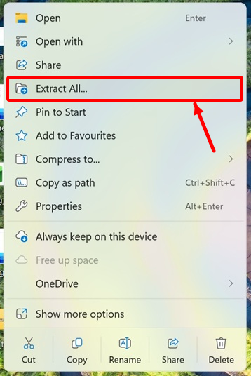
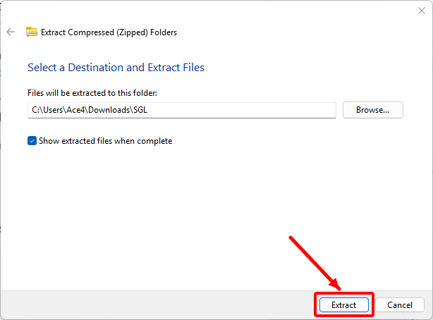
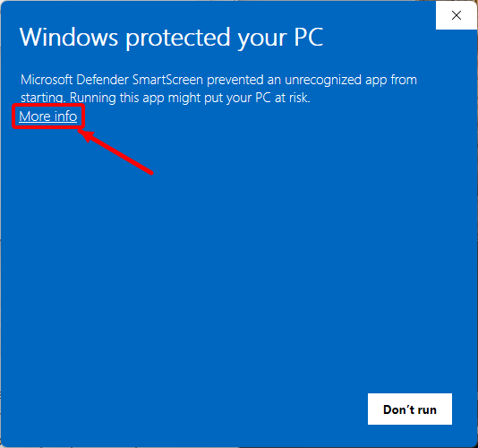
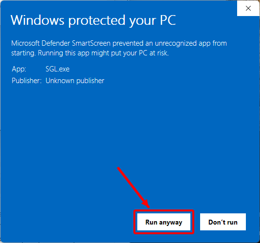
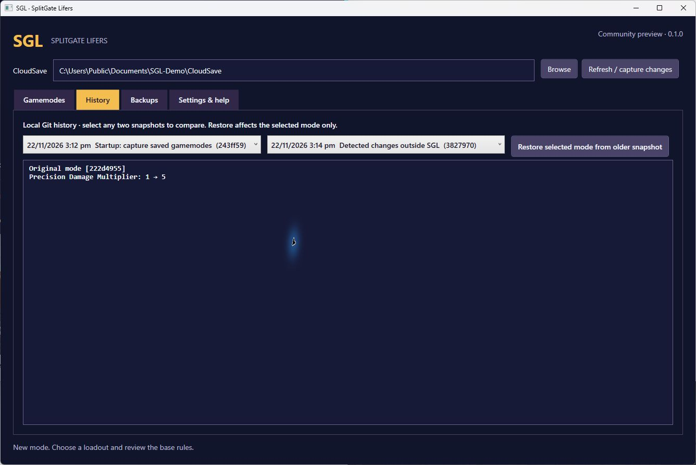

SGL setup guide
Download SGL.zipInstall SGL
- Download SGL.zip. Use the Download SGL.zip button above or SGLifers/SGL releases.
- Extract the complete ZIP. Right-click
SGL.zipand choose Extract All…. In the next window, click Extract.
Choose Extract All…. 
Click Extract to create the SGL folder. - Open SGL. Open the extracted SGL folder and double-click
SGL.exe. Follow the Windows steps below.
Continue installation: Windows Security
Windows protected your PC
SGL is unsigned, so Windows SmartScreen can show this screen when you first open it.
- Click More info.

Open the additional details. - Click Run anyway to open SGL.

Choose Run anyway to open SGL.
If Windows blocks or removes SGL
- Open Windows Security → Virus & threat protection → Protection history.
- Expand the detection for
SGL.exe. - Choose Actions → Allow on device. If the file is quarantined, choose Restore first, then allow it if Windows prompts again.
- If Windows already removed the file, download
SGL.zipagain and extract it. - Open
SGL.exeagain.

Finish setup
- Locate your game saves. SGL defaults to your Windows user's CloudSave folder. Use Browse for another location. If no custom mode exists, save one in-game, close Splitgate, then Refresh in SGL.
- Configure and save. Open an installed mode, create a new mode, or choose a community preset. Edit the loadout and rules. Close Splitgate before clicking Save to game.

The 0.3.3 preview adds Search all settings in Gamemodes. Search names, descriptions, categories or loadout choices to show matching controls across categories. Clear the search or press Escape to return to the category view; unsaved edits are retained.
A running game does not prevent editing or saving a draft. Applying configurations requires the game to be closed.
Install maps and link gamemodes
- Open Maps. Browse the community catalog, search by name, author or local tags, and filter by category or tag. The catalog is cached for offline browsing.
- Select a map, close Splitgate, and click Install selected map. SGL downloads the map and registers it in your save index with an automatic backup. For an existing download, choose Import map .bin.
- Choose an installed map and a mode, then click Associate. Several modes can be linked to one map. Double-click a linked mode to open its editor.
- Start Splitgate and select the map and gamemode separately in the custom lobby. An association is an SGL shortcut, not a game rule.
Organize maps with tags
Select a community or installed map and click Edit local tags…. Enter comma-separated labels such as TDM, 1v1, Friday event, then save. Use the Tag dropdown to filter both map lists; each search box also matches tags. Clear the labels to remove them. Tags are saved in your SGL profile and included when publishing or exporting a map. Map bundles carry the pinned map revision’s tags. Installing an update refreshes unchanged tags and preserves any personal tag additions or removals. Editing tags works while Splitgate is running.
Existing maps and Map Lab edits are kept. Map updates and prefabs are not available in this version. Downloads come from the community repository; it does not provide independent package signatures or checksums.
Manage your local library
Drag the vertical dividers to widen the installed-mode list, settings categories, or installed-map/details pane. Widths are remembered across restarts. Use Settings & help → Reset pane widths to restore the defaults.
Select an installed item and choose Delete selected mode or Delete selected map with Splitgate closed. Review the confirmation. SGL creates a backup and moves the item’s archives, including older saves and Map Lab edits, into that backup. Associated maps or modes remain installed.
Deleted gamemodes remain recoverable through History. Use the Backups tab to restore the complete library snapshot. If cleanup reports a locked file, review the retained paths before running MapLoader.
Your gamemode history
SGL captures a baseline on first scan. On later launches or Refresh it compares saved configurations and creates a local Git commit only when something changed. A successful SGL save records a revision immediately. No Git account or upload is involved.
- Open an installed mode.
- Choose History and select two snapshots to compare.
- Choose Restore selected mode from older snapshot to load the old configuration into the editor.
- Review it, close Splitgate and click Save to game. Restoration creates a new revision and preserves later history.

History records game files that were actually saved. It cannot recover unsaved game edits or intermediate edits between scans. Renaming through SGL preserves the mode identity; externally deleting and recreating a mode starts a new identity.
Updates and recovery
SGL checks official releases at startup, downloads verified updates and restarts before editing. Unsaved or invalid editor changes defer replacement. Settings includes an automatic-update toggle and a manual check. Offline or failed update checks leave the installed version available.
The updater verifies a signed manifest and checksum. Windows can still block an unsigned update or helper. If replacement fails, the previous executable is retained and startup failure attempts rollback. Use the official ZIP for manual recovery; keep your SGL data folder.
Preferences, drafts and Git history live under %LOCALAPPDATA%\SGL. Game-save backups live beneath CloudSave\Backup. Restoring a complete manifest backup changes the entire registration list to that earlier point; it differs from restoring one mode revision.
Need help?
In SGL, open Settings & help → Report a bug. Describe the steps, expected behavior and what happened, then review the report preview. Optional diagnostics include app/system versions, library counts and error types; raw logs, save contents, local paths and account details are excluded. Choose Copy & open GitHub draft, review it on GitHub and submit the issue. You can attach screenshots there. Use Copy report or Save report to share it without a GitHub account. You can also open an issue directly.
Current scope: all 115 documented advanced settings plus five SGL extras, three creation templates, six community presets, community map installation and local map-to-mode associations. Bots includes difficulty; Spawning includes timed respawns, penalties and spawn selection. Settings absent from a saved base are marked unavailable. Gold markers identify SGL extras and values outside demonstrated in-game ranges. Custom values may be clamped or ignored by the game.